전기기능사 (2002-07-21 기출문제)
1과목: 전기 이론
1. 1000[㎐]에서 30[Ω]인 콘덴서를 2000[㎐]에 사용하면 리액턴스[Ω]는?
- 60
- 45
- 30
- 15
(정답률: 40%)

2. 다음 중에서 반 자성체는?
- 니켈
- 은
- 망간
- 철
(정답률: 75%)
3. 자기 인덕턴스 1[H]의 코일에 10[A]의 전류가 흐르고 있을때 저축되는 에너지[J]는?
- 10
- 50
- 100
- 200
(정답률: 48%)
4. 저항 8[Ω ]과 유도 리액턴스 6[Ω]이 직렬로 접속된 회로에 100[V]의 교류 전압을 가하면 몇[A]의 전류가 흐르며 역률은 얼마인가?
- 10[A], 80%
- 9[A], 75%
- 8[A], 70%
- 7[A], 60%
(정답률: 72%)
5. 두 점전하 사이에 작용하는 정전력의 크기는 두 전하의 곱에 비례하고 전하사이의 거리의 제곱에 반비례하는 법칙은?
- coulomb's law
- ohm's law
- kirchhoff's law
- joule's law
(정답률: 82%)
6. 내부저항이 2[Ω]인 건전지 10개를 직렬로 연결하고 이것을 다시 병렬로 5개 연결한 전원이 있다. 이 전원의 내부저항은 얼마인가?
- 1[Ω]
- 2[Ω]
- 3[Ω]
- 4[Ω]
(정답률: 68%)
7. 저항 R1, R2의 병렬회로에서 R2에 흐르는 전류가 I일때 전전류는?
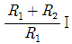
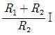
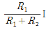
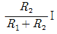
(정답률: 44%)
8. e=141sin(120πt - π/3)인 파형의 주파수는 몇[㎐]인가?
- 120[㎐]
- 60[㎐]
- 30[㎐]
- 15[㎐]
(정답률: 78%)
9. 그림과 같은 회로에 대칭 3상 200[V] 교류전압을 가했을 때 이 회로에 흐르는 선전류[A]는?
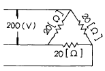
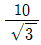
- 10
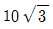
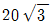
(정답률: 61%)
10. 코로나 방전 현상이 잘못 기술된 것은?
- 평등 전계에서 일어난다.
- 국부 방전이다.
- 엷은 빛과 낮은 소리를 내는 코로나 방전이 일어난다.
- 코로나에 의하여 전위 기울기가 감소하지 않으면 전로 파괴로 발전한다.
(정답률: 39%)
11. 비오-사바아르의 법칙(biot-Savart's law)은 무엇과 관계가 있는가?
- 전류와 자장
- 기자력과 자속밀도
- 전위와 자장
- 기자력과 자장
(정답률: 60%)
12. m[Wb]의 점자극에서 r[m] 떨어진 점의 자장의 세기는 공기 중에서 몇[AT/m]인가?
- m/4π r
- m/4π μ r
- m/4π r2
- m/4π μ r2
(정답률: 51%)
13. 전극의 불순물로 인하여 기전력이 감소하는 현상을 무엇이라 하는가?
- 국부 작용
- 성극 작용
- 전기 분해
- 감극 현상
(정답률: 58%)
14. 900[w]의 전열기를 10시간 연속 사용 했을 때의 발열량은 몇[Kwh]인가?(오류 신고가 접수된 문제입니다. 반드시 정답과 해설을 확인하시기 바랍니다.)
- 0.9[Kwh]
- 4.5[Kwh]
- 9[Kwh]
- 90[Kwh]
(정답률: 69%)
15. 진공의 유전율 ε0 의 크기[F/m]는 얼마인가?
- 8.855× 10-15
- 8.855× 10-12
- 8.855× 10-9
- 8.855× 10-6
(정답률: 63%)
16. 자극세기의 단위로 사용되는 것은?
- [C]
- [Wb]
- [W]
- [F]
(정답률: 77%)
17. 플레밍의 오른손 법칙에서 유도 기전력의 방향을 나타내는 손가락은?
- 엄지
- 검지
- 중지
- 약지
(정답률: 73%)
18. 교류 회로에서 유도 리액턴스는 어떤 역할을 하나?
- 전류를 잘 흐르게 한다.
- 전류의 위상을 90° 빠르게 한다.
- 전류의 위상을 90° 뒤지게 한다.
- 전압의 위상을 45° 늦게 한다.
(정답률: 63%)
19. 지름이 2.0[mm]인 600[V] 비닐절연전선 3가닥을 동일 금속관에 넣어 시공할 때 전선 1본에 대한 허용전류는 몇[A]인가? (단, 동선의 허용전류값은 35[A]이며, 전류감소계수는 0.7이다.)
- 22
- 24
- 27
- 35
(정답률: 43%)
20. 가요전선관과 금속관을 접속하는데 사용하는 것은?
- 컴비네이션 커플링
- 앵글박스 커넥터
- 플랙시블 커플링
- 스틀렛박스 커넥터
(정답률: 71%)
2과목: 전기 기기
21. 금속관 공사에서 관을 박스에 고정시킬때에 사용하는 것은?
- 로크너트
- 새들
- 커플링
- 노어멀밴드
(정답률: 65%)
22. 피뢰기의 약호는?
- CT
- LA
- DS
- CB
(정답률: 76%)
23. 전선을 다른 방향으로 돌리는 부분에 사용되는 애자는?
- 고압가지애자
- 구형애자
- 옥애자
- 저압곡핀애자
(정답률: 38%)
24. 정격 전류10[A], 20[A], 40[A] 3상 200[V]용 전동기가 있다. 이에 대한 배선공사시 간선의 소요 허용 전류[A]의 최소값은 얼마인가?
- 77
- 89
- 83
- 96
(정답률: 56%)
25. 교류전동기의 기동방식 중에서 권선형 전동기에만 적용되는 것은?
- 기동 보상기
- 기동 저항기
- 직입 기동 방식
- Y-△ 기동기
(정답률: 39%)
26. 철근 콘크리이트주에 완금을 붙이고 고정하는데 필요하지 않은 것은?
- 아암타이
- 행거 밴드
- U볼트
- 밴드
(정답률: 48%)
27. 심벌의 명칭은?
- 전동기
- 유도등
- 발전기
- 점멸기
(정답률: 53%)
28. 대용량의 콘덴서를 설치하면 고조파 전류가 증대하여 파형이 나빠지므로 파형 개선을 위해서는 무엇을 설치하는 것이 바람직한가?
- 콘덴서 회로
- 직렬 리액터
- 방전장치
- 영상 변류기
(정답률: 44%)
29. 주상 변압기 2차측 접지공사는?(관련 규정 개정전 문제로 여기서는 기존 정답인 2번을 누르면 정답 처리됩니다. 자세한 내용은 해설을 참고하세요.)
- 제1종접지
- 제2종접지
- 제3종접지
- 특별제3종접지
(정답률: 55%)
30. 일반적으로 졍크션 박스내에서 사용되는 전선 접속방식은?
- 슬리이브
- 코오드놋트
- 코오드파아스너
- 와이어커넥터
(정답률: 73%)
31. 전선관 가공작업시 작업내용에 따른 사용공구가 아닌 것은?
- PVC 전선관의 굽힘 작업은 토오치램프를 사용한다.
- 전선관을 절단 후에는 단구에 리이머 작업을 실시한다.
- 금속관 굽힘작업은 파이프 밴더를 사용한다.
- 금속관 나사 내는 공구는 노크아웃펀치를 사용한다.
(정답률: 48%)
32. 무대, 무대밑, 오케스트라 박스, 영사실, 기타 사람이나 무대도구가 접촉될 우려가 있는 장소에 시설하는 저압옥내배선, 전구선 또는 이동전선은 사용전압이 몇[V] 미만이어야 하는가?
- 400
- 500
- 600
- 700
(정답률: 77%)
33. 합성 수지 몰드 공사의 방법 중 틀린 것은?
- 절연 전선일 것(옥외용 비닐 절연 전선은 제외)
- 합성 수지제의 박스 안에서 접속할 것
- 몰드 상호 및 몰드와 박스 등과는 전선이 노출 되지 않도록 접속할 것
- 몰드 내에서 접속할 것
(정답률: 57%)
34. 드라이브이트 툴(driveit tool)은 어느 곳에 필요한 공구인가?
- 콘크리트에 구멍을 뚫는다.
- 금속관의 나사 내기를 한다.
- 분전반에 구멍을 뚫는다.
- 금속관의 절단 부분을 다듬는다.
(정답률: 61%)
35. 계전기별 고유번호에서 89의 명칭은?
- 여자계전기
- 교류차단기
- 단로기
- 전류차동계전기
(정답률: 56%)
36. 다음 심벌은 수용가의 인입구 부근에 붙여서 무부하 상태의 전로를 개폐하는 역할을 하는 이 심벌의 명칭은 무엇인가?
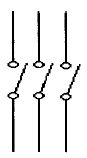
- 피뢰기
- 단로기
- 차단기
- 개폐기
(정답률: 46%)
37. 전선 접속시 접속점의 인장 강도는 몇 % 이상 되어야 하는가?
- 50[%]
- 60[%]
- 70[%]
- 80[%]
(정답률: 63%)
38. 학교, 사무실, 은행의 간선의 굵기 선정시 수용률은 몇[%]인가?
- 50
- 60
- 70
- 80
(정답률: 56%)
39. OW, RB 전선은 각각 무슨 전선을 말하는가?
- 600[V] 비닐 절연전선, 고무 절연전선
- 옥외용 비닐 절연전선, 600[V] 비닐 절연전선
- 옥외용 비닐 절연전선, 고무 절연전선
- 인입용 비닐 절연전선, 옥외용 비닐 절연전선
(정답률: 71%)
40. 박강 전선관의 호칭값 [mm]이 아닌 것은?
- 15
- 16
- 25
- 39
(정답률: 59%)
3과목: 전기 설비
41. 제3종 접지공사의 접지선을 동선으로 사용할 때 접지선의 최소 굵기는 얼마인가 ?
- 1.2[mm]
- 1.6[mm]
- 2.0[mm]
- 2.6[mm]
(정답률: 39%)
42. 아크용접기는 절연변압기를 사용하고 그 1차측전로의 대지전압은 최대 몇[V] 이하 이어야 하는가?
- 100
- 200
- 300
- 400
(정답률: 52%)
43. 3300/220V의 승압기를 사용하여 3000V의 전압을 승압하고자 할 때 고압측 전압은 몇 V 인가?
- 3100
- 3200
- 3220
- 3300
(정답률: 44%)
44. 전력원선도의 가로축과 세로축이 나타내는 것은?
- 전압과 전류
- 전압과 전력
- 전류와 전력
- 유효전력과 무효전력
(정답률: 57%)
45. 수력발전소에서 자연유하식 도수로의 물매는 일반적으로 얼마로 하는가?
- 1/2000 ∼ 1/3000
- 1/1000 ∼ 1/1500
- 1/300 ∼ 1/400
- 1/500 ∼ 1/700
(정답률: 56%)
46. 어떤 상가 주택의 수용설비용량이 1000㎾, 부하역률이 85%, 수용률이 80%라면 최대수용전력은 몇 ㎾ 인가?
- 800
- 840
- 900
- 940
(정답률: 39%)
47. 3상의 경우 콘덴서를 △결선으로 하고 선간전압을 V[V], 주파수를 f[Hz], 콘덴서의 정전용량을 C[㎌], 충전전류를 Ｉ[A]라 하면 콘덴서의 용량 Q는 몇 kVA 인가?
- Q =
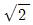
πfCV2×10-9 - Q =3πfCV2×10-9
- Q =
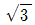
πfCV2×10-9 - Q =6πfCV2×10-9
(정답률: 29%)
48. 케이블의 연피손의 원인은?
- 맴돌이 전류
- 히스테리시스 현상
- 유전체손
- 표피작용
(정답률: 41%)
49. 수전단에 있는 무효전력을 조정해서 수전단 전압을 일정하게 유지하는 것으로 선로의 수전단이나 중간에 설치하는 것은?
- 승압기
- 조상기
- 직렬콘덴서
- 유도전압조정기
(정답률: 52%)
50. 고압 보일러의 자연순환형에서 수관의 높이를 높게 하는 이유는?
- 가열면을 많게 하기 위하여
- 열량을 많이 받게 하기 위하여
- 수두를 크게 하기 위하여
- 증기의 온도를 높이고, 증기 발생량을 많게 하여 열효율을 증가 시키기 위하여
(정답률: 38%)
51. 증기의 엔탈피란?
- 증기 1㎏의 잠열
- 증기 1㎏의 감열
- 증기 1㎏의 보유열량
- 증기 1㎏의 증발열
(정답률: 46%)
52. 환상식 배전의 이점은?
- 증설이 쉽다.
- 전압변동이 적다.
- 시설비가 적다.
- 농촌지역에 적합하다.
(정답률: 54%)
53. 아아킹 호온(arcing horn)의 설치 목적은?
- 애자련의 보호
- 전선의 진동방지
- 코로나손실 방지
- 이상전압의 소멸
(정답률: 37%)
54. 출력 5000㎾, 유효낙차 50m인 수차에서 안내날개의 개방상태나 효율의 변화없이 일정하고 유효낙차만 5m 줄었을 경우 출력은 약 몇 ㎾ 가 되겠는가?
- 4000
- 4270
- 4500
- 4820
(정답률: 36%)
55. 우리나라에서 가장 많이 채용되고 있는 발전소의 댐은?
- 콘크리트 중력댐
- 아치댐
- 흙댐
- 취수댐
(정답률: 66%)
56. 기력발전소의 에너지 변환 순서를 바르게 열거한 것은?
- 전기에너지→ 기계에너지→ 증기에너지→ 연료에너지
- 증기에너지→ 연료에너지→ 전기에너지→ 기계에너지
- 연료에너지→ 증기에너지→ 기계에너지→ 전기에너지
- 기계에너지→ 전기에너지→ 연료에너지→ 증기에너지
(정답률: 57%)
57. 재열기 중의 증기수열의 상태 변화는?
- 등온
- 등적
- 등압
- 등온, 등압
(정답률: 41%)
58. 상당 대지면의 깊이는 산악지대에서는 몇 m 인가?
- 100
- 300
- 600
- 900
(정답률: 32%)
59. 기력발전소에서 사용하는 연료의 조건이 아닌 것은?
- 생산량이 풍부하고 공급이 안정적이어야 한다.
- 연소가 잘되고 취급이 용이해야 한다.
- 질소나 황 성분이 많아 발열량이 많아야 한다.
- 가격이 저렴해야 한다.
(정답률: 66%)
60. 진상용 고압콘덴서에 방전코일이 필요한 이유는?
- 잔류전하의 방전
- 전압강하의 감소
- 낙뢰로부터 기기 보호
- 역률 개선
(정답률: 52%)